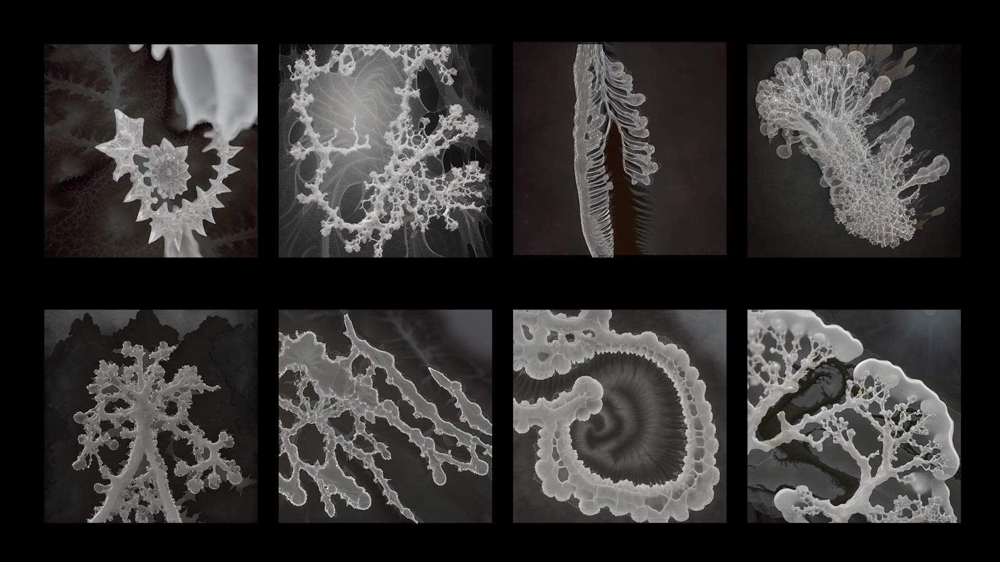
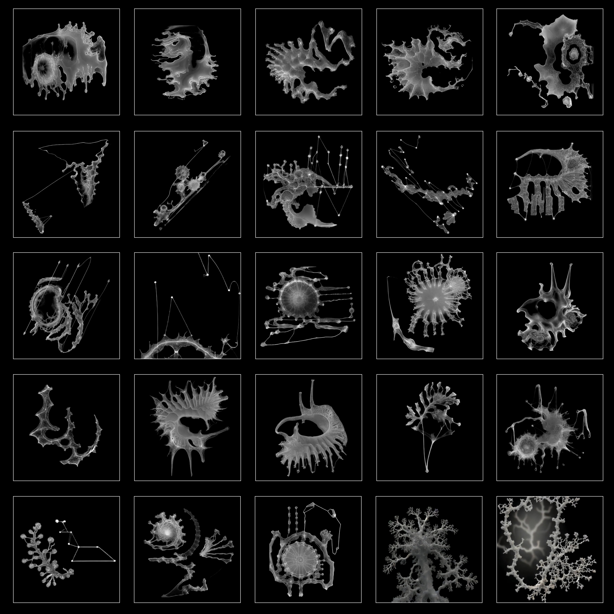

The Lens of AI: Decomposer Of Information
April 2024
Touchdesigner and Stable Diffusion animations
Click here to read the essay
In this artwork, artificial intelligence (AI) is envisioned as a digital decomposer, analogous to biological decomposers like fungi and bacteria that break down organic substances into simpler forms. In this cyberspace, AI decomposes the complex data structures of fossils, which are symbolic of ancient, seemingly immutable objects. These fossils, collected from the southern coastlines of Folkstone and Charmouth in the UK, are placed under a microscope camera. As the camera zooms in and out, AI-generated forms resembling slime molds or fungi cling to and animate the fossils. This interaction makes the fossils appear to twist and struggle, eventually disintegrating into a digital sea and breaking down into atomized pixels.
This visual experiment employing a simple metaphor to bridge micro and macro aesthetics, also contemplates the essence of form and the universal applicability of fractal patterns found in nature. By focusing on regions where the camera's clarity is highest, the artwork suggests AI's preference for 'clean' and structured data, symbolizing its role in deconstructing complex structures previously deemed indestructible. This dynamic metaphor not only explores the boundaries between digital and organic lifeforms but also provokes thoughts on how everything in the digital age—from arrays and pixels to extensive data constructs—can be decomposed into fundamental elements like code and numbers, reflecting an ongoing narrative of transformation and perception. The project prompts deeper reflections on the role of technology, such as AI, and information within the cyber ecosystem, urging us to reconsider their evolving influence and implications in our interconnected world.
AI-generated forms


Processes and Screenshots
.png)
.png)
.png)
.jpg)
.jpg)
.jpg)
.jpg)
.png)
.png)
.png)
.png)
References
Inoue, S. and Kondo, S. (2016). Suture pattern formation in ammonites and the unknown rear mantle structure.
Scientific Reports, [online] 6(1), p.33689. doi:https://doi.org/10.1038/srep33689.
Patreon. (n.d.). Get more from DotSimulate on Patreon. [online] Available at:
https://www.patreon.com/dotsimulate/posts [Accessed 21 Apr. 2024].
Przemyslaw Prusinkiewicz and Lindenmayer, A. (2012). The Algorithmic Beauty of Plants. Springer Science &
Business Media.
www.youtube.com. (n.d.). Audioreactive Graffiti – TouchDesigner x StreamDiffusion Tutorial 1. [online]
Available
at: https://www.youtube.com/watch?v=Y9i3X2jxYLc&t=1706s [Accessed 21 Apr. 2024].
www.youtube.com. (n.d.). BLOB TRACK INSTANCING (AUDIOREACTIVE) - TOUCHDESIGNER TUTORIAL. [online] Available
at:
https://www.youtube.com/watch?v=gtP1Ae35RqY.
www.youtube.com. (n.d.). Real-time diffusion in TouchDesigner - StreamdiffusionTD Setup + Install +
Settings.
[online] Available at: https://www.youtube.com/watch?v=X4rlC6y1ahw&t=240s [Accessed 21 Apr. 2024].
www.youtube.com. (n.d.). Sonic Flowers – TouchDesigner x StableDiffusion Tutorial 1. [online] Available at:
https://www.youtube.com/watch?v=4wpn_3JNaIc&t=183s [Accessed 21 Apr. 2024].